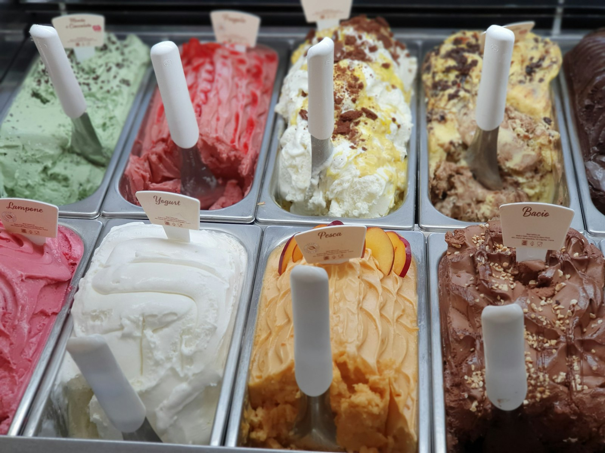
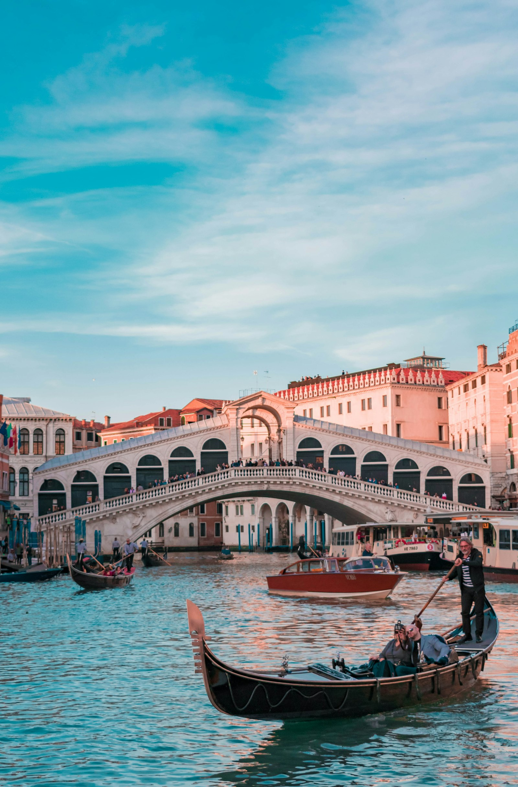
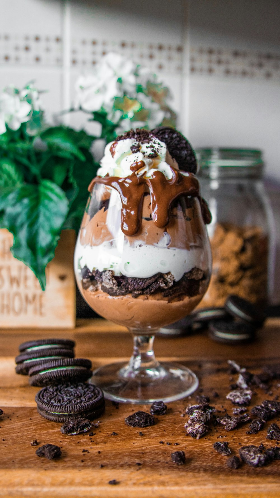
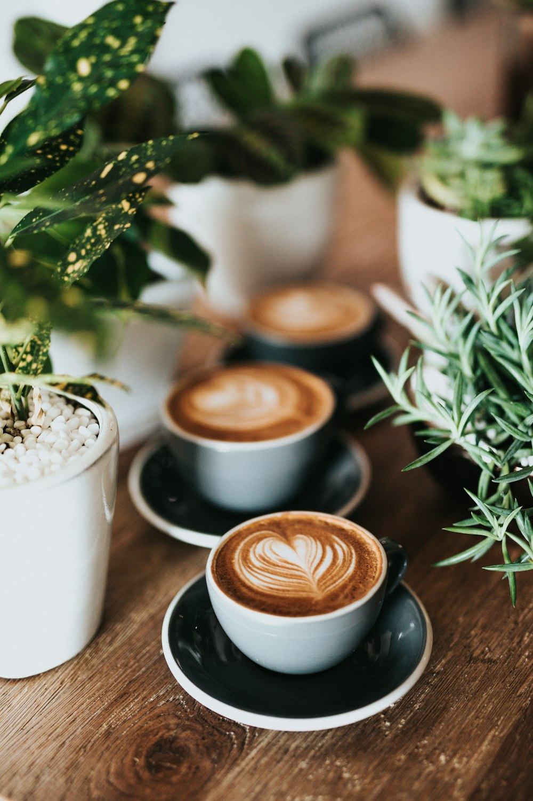
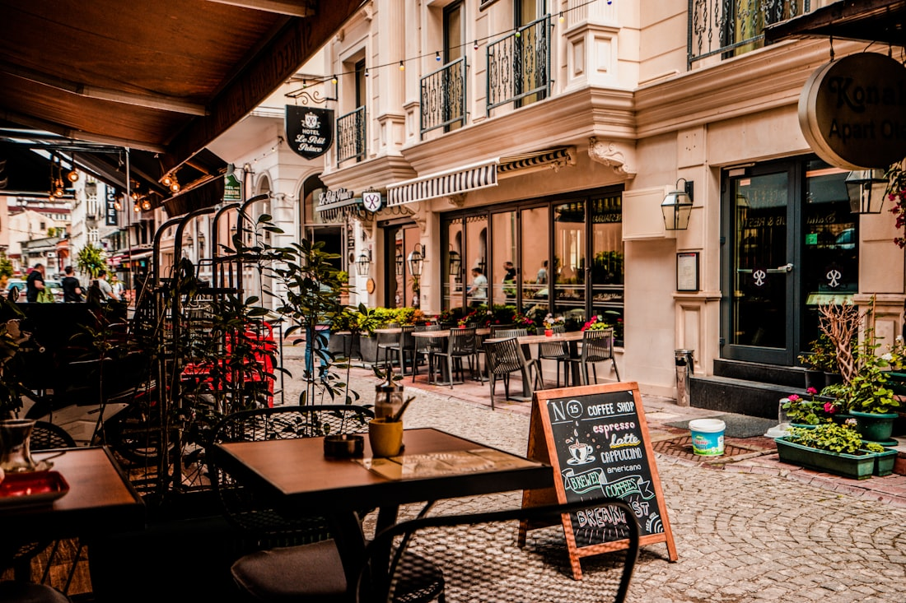

Hausgemachtes Eis
Italienische Eisspezialitäten, täglich frisch und in liebevoll wechselnden Sorten geschöpft.
Benvenuti · Seit Generationen ein Familienbetrieb
Im Eiscafé Adria verbinden wir handwerkliche Tradition mit echter italienischer Lebensfreude. Täglich frisch geschöpftes Eis, feine Kuchen und mediterrane Köstlichkeiten – serviert mit Herz auf unserer sonnigen Terrasse.

Italienische Eisspezialitäten, täglich frisch und in liebevoll wechselnden Sorten geschöpft.
Feine Torten, Kuchen und Waffeln – die perfekte Begleitung zu einem guten italienischen Kaffee.
Frühstück, Pizza, Pasta und kleine herzhafte Gerichte – mediterraner Genuss zu jeder Tageszeit.
Weitläufige Plätze drinnen wie draußen – barrierefrei und mit freien Parkplätzen direkt vor der Tür.

Adriaseit jeher FamilientraditionUnsere Geschichte
Der Name Adria ist Versprechen und Heimat zugleich: das tiefe Blau des Meeres, die Wärme der italienischen Sonne und die Gastfreundschaft, mit der wir unsere Gäste seit jeher empfangen. Als Familienbetrieb führen wir das Eiscafé Adria mit Hingabe – Generation für Generation.
Im Mittelpunkt steht unser hausgemachtes Eis: nach überlieferten Rezepturen Tag für Tag frisch hergestellt, in einer Auswahl, die sich immer wieder wandelt und gerne auch zu außergewöhnlichen Kreationen einlädt. Dazu feine Kuchen und Torten, knusprige Waffeln sowie mediterrane Gerichte – alles, was den Tag zu einem kleinen Fest macht.
Was uns ausmacht
Von der ersten Kugel Gelato bis zum herzhaften Mittagstisch – im Adria genießen Sie italienische Genusskultur in ihrer ganzen Vielfalt.
Hausgemachtes italienisches Eis in wechselnden Sorten, fantasievolle Eisbecher und cremiges Softeis.
Täglich frische Patisserie aus eigener Herstellung – klassisch, fruchtig und unwiderstehlich.
Frisch gebackene Waffeln und feine Crêpes, mit Eis, Früchten oder Sahne nach Ihrem Geschmack.
Ein guter Start in den Tag: verschiedene Frühstücksvariationen und italienische Kaffeespezialitäten.
Mediterrane Klassiker, frisch zubereitet – von der knusprigen Pizza bis zur hausgemachten Pasta.
Frische Salate, knuspriger Toast und kleine herzhafte Gerichte für den Genuss zwischendurch.
Impressionen
Sonnenstrahlen auf der Terrasse, der Duft von frischem Espresso und ein Becher Eis, der den Sommer einfängt.





Zu Gast in Erbach
Unser Eiscafé liegt in Erbach im Odenwald, der ehemaligen Residenzstadt mit ihrem prächtigen Schloss, dem malerischen Marktplatz und den liebevoll restaurierten Fachwerkgassen. Nach einem Bummel durch die Altstadt, einem Besuch der Gräflichen Sammlungen oder des Deutschen Elfenbeinmuseums lädt das Adria zur süßen Pause ein.
Wir freuen uns auf Sie
| Montag – Samstag | 9:00 – 23:00 Uhr |
|---|---|
| Sonntag | 10:00 – 23:00 Uhr |
| Feiertage | 10:00 – 23:00 Uhr |
Ob Eisbecher in der Sonne, Frühstück mit Freunden oder ein Caffè zwischendurch – im Eiscafé Adria sind Sie herzlich willkommen. Wir freuen uns auf Ihren Besuch.
Ihre Familie Frare & Tavian